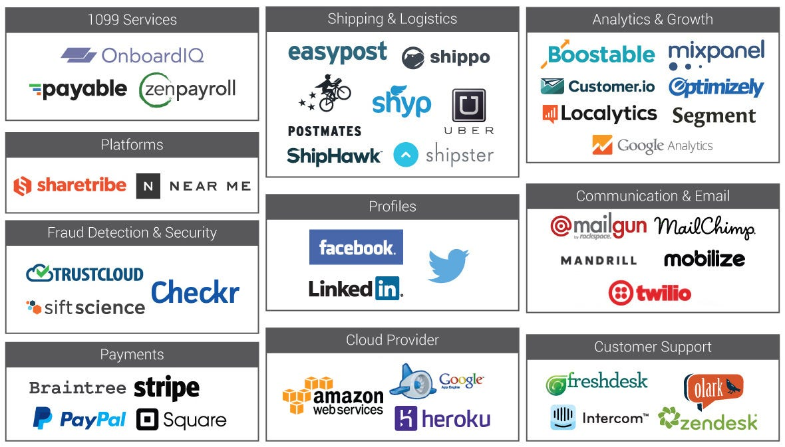
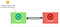

Everything is marketplace able with a good layer of technologies.


Everything is marketplace able with a good layer of technologies.
Highlighting shared interests or connections and easing them for people is what a marketplace is about. there aren’t bad marketplaces and marketplace isn’t a tool for leading people but for helping them connect each other and make transactions that sometimes would not be possible without the created marketplace. It was almost impossible for these persons sharing now a car to meet and travel together.
You can target to marketplace an existing community of people that share the same interests by making the discovery process among participants easier. What if you created a place where fans of an artist could discover each and connect. You there created a simple social media for the fans but guess if they are fans of collectibles they are a lot of possible transactions which can happen between them like collectible exchange…. You now have a marketplace of collectibles. Social media is the main component of what we call a market network because it handles the pre and post transaction processes with functionalities like messaging, connections, and participants discovery. In fact what we see now as marketplace is just a transaction processor where market networks go deeper by providing the tools that help participants manage themselves and their activities inside and outside of the market network.
